철도토목산업기사 (2002-08-11 기출문제)
1과목: 철도공학
1. 다음중 가장 선로용량이 많은 system은?
- 단선통표폐색식
- 단선C.T.C
- 복선 쌍신폐색식
- 복선A.B.S
(정답률: 알수없음)
2. 수송수요의 요인중에 속하지 않는 것은?
- 자연요인
- 유발요인
- 강제요인
- 전가요인
(정답률: 알수없음)
3. 열차가 평탄하고 직선인 선로에서 정지상태에서 움직이는데 처음 발생하는 저항은?
- 출발저항
- 주행저항
- 가속도저항
- 곡선저항
(정답률: 알수없음)
4. 궤도 10m에 침목 16개를 부설하였다면, 침목 1개가 받는 레일 압력은? (단, 궤도계수:180kg/cm/cm, 침하량:0.50cm (충격포함))
- 1125kg
- 2880kg
- 3600kg
- 5625kg
(정답률: 알수없음)
5. 궤도에 작용하는 외력 중 횡압에 해당하는 것은?
- 자중
- 차량동요 관성력의 수직성분
- 곡선통과시 불평형 원심력에 따른 윤중
- 분기기등 궤도틀림에 의해 발생된 힘
(정답률: 알수없음)
6. 50kg 8# 분기기의 보통 포인트 입사각은?
- 2° 00'21"
- 7° 09'10"
- 9° 09'23"
- 5° 43'29"
(정답률: 알수없음)
7. 레일 용접부 검사시 휨(bending)시험을 위한 지점간 거리는?
- 914mm
- 907mm
- 1000mm
- 1435mm
(정답률: 알수없음)
8. 장대레일 단부(端部) 신축량의 합계 Y를 산출하는 공식이 아닌 것은? (단, X는 축응력과 침목저항이 동등하게 되는 점까지의 거리, β 는 레일의 선팽창계수, t는 온도변화, r은 저항, E는 레일의 탄성계수, F는 레일의 단면적이다.)
- Xβt/2
- βX/2EF
- rX2/2EF
- EFβ2t2/2r
(정답률: 알수없음)
9. 객차조차장에 존재하는 선들이다. 해당 없는 선은?
- 계중대선
- 도착선
- 유치선
- 검사선
(정답률: 알수없음)
10. 험프조차장에서 분해작업을 할 경우에는 인상선에 상당하는 것이 험프에 향하여 오르막으로 된 화차조차장의 선군(線群)은?
- 도착선
- 분별선
- 압상선
- 수수선
(정답률: 알수없음)
11. 장대레일 체결 장치의 체결을 풀어서 재구속함을 말하는 것은?
- 중위온도
- 재설정
- 재체결
- 궤도강성
(정답률: 알수없음)
12. 다음 선로보수기계 장비 중 레일사용수명 연장을 도모하는 장비는?
- 바라스트크리너
- 레일탐상차
- 레일연마차
- 궤도검측차
(정답률: 알수없음)
13. 단선구간의 선로용량을 구할 때 사용되지 않는 것은?
- 선로이용율
- 고속열차 회수비
- 관계취급시분
- 1개 열차의 역간평균 운전시분
(정답률: 알수없음)
14. 철도선로는 협궤와 광궤로 구분할 수 있다. 다음 중 광궤의 장점이라고 할 수 없는 것은?
- 고속도를 낼 수 있다.
- 열차동요를 줄일 수 있다.
- 시설물 유지비, 건설비가 적게 든다.
- 차륜의 마모가 적다.
(정답률: 알수없음)
15. 우리나라 고속철도에서 채용하고 있는 완화곡선 형상은?
- 3차 포물선
- 정현반파장곡선
- 크로소이드곡선
- 렘니스케이트곡선
(정답률: 알수없음)
16. 본선레일과 마모방지용 레일과의 간격에 대한 설명이 맞는 것은?
- 탈선방지용 레일보다 좁아야 효과가 있다.
- 탈선방지용 레일과 같이 65+Smm이다.
- 안전레일과 같이 180mm 정도이다.
- 120mm이다.
(정답률: 알수없음)
17. 직선 구간에서의 건축한계가 4.2m인 국철 구간에서 곡선 반경 500m인 곡선에서는 확폭을 포함한 건축한계가 몇 m인가?
- 4.25m
- 4.30m
- 4.40m
- 5.20m
(정답률: 알수없음)
18. 완화곡선 중 곡률이 곡선장에 비례하여 체감되는 곡선은?
- 크로소이드곡선
- 3차포물선
- 사인반파장곡선
- 레므니스케이드곡선
(정답률: 알수없음)
19. 장대레일의 신축대비로서 유간변화를 이용하여 장대레일 단부의 신축량을 배분하는 방법으로 장대레일 상간에 부설하는 정척레일은?
- 신축이음매
- 완충레일
- 장척레일
- 접착절연레일
(정답률: 알수없음)
20. 선로의 노반이 50m가 침하되어 서행신호기를 건식하였을 때 열차가 지정서행 속도 이하로 운전하여야 할 거리는? (단, 통과열차의 열차길이는 200m로 함.)
- 50m
- 150m
- 350m
- 450m
(정답률: 알수없음)
2과목: 측량학
21. 하천의 연직선내의 평균유속을 구하는데 2점법은 다음 사항중 어느것인가?
- 수면에서 수심의 1할, 9할점의 유속을 측정, 평균 한다.
- 수면에서 수심의 2할, 8할점의 유속을 측정, 평균 한다.
- 수면에서 수심의 3할, 7할점의 유속을 측정, 평균 한다.
- 수면에서 수심의 4할, 6할점의 유속을 측정, 평균 한다.
(정답률: 알수없음)
22. 다음 삼각망의 각 조건식 수는?
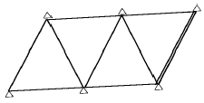
- 2
- 3
- 4
- 5
(정답률: 알수없음)
23. 반지름 400m인 단곡선에서 시단현 15m에 대한 편각은?
- 64′ 27″
- 67′ 29″
- 73′ 33″
- 77′ 42″
(정답률: 알수없음)
24. 축척 1/1,200 지도상의 면적을 축척 1/1,000로 잘못 보고 면적을 계산하여 10.0m2를 얻었다면 실제면적은?
- 14.400 m2
- 13.833 m2
- 13.333 m2
- 12.506 m2
(정답률: 알수없음)
25. 사진측량의 개념에 있어서 2가지 해석방법이 있는데 그 중 정량적 해석방법이 아닌 것은?
- 크기
- 면적
- 체적
- 대상물의 특성
(정답률: 알수없음)
26. 다음 그림과 같은 표고를 갖는 지형을 평탄하게 정지작업을 한다면 이 지역의 평균표고는 얼마인가?
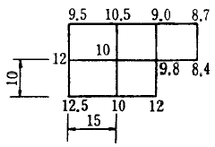
- 10.218m
- 10.916m
- 10.188m
- 10.175m
(정답률: 알수없음)
27. 다음의 수평각 α, β 및 γ를 같은 정도로 측정하였을 때 ∠AOC 의 최확치는? (단, α = 30° 21'20", β = 35° 15'28", γ= 65° 37'00")
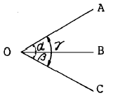
- 65° 36'56"
- 65° 37'04"
- 65° 36'52"
- 65° 37'08"
(정답률: 알수없음)
28. 원격탐측의 특징으로 옳지 않는 것은?
- 짧은 시간에 넓은 지역을 동시에 측정할 수 있다.
- 반복측정이 가능하며 정량화할 수 있다.
- 회전주기를 조정할 수 있으므로 원하는 지점 및 시기에 관측할 수 있다.
- 다중파장대에 의한 정보획득이 용이하고 판독이 자동적이다.
(정답률: 알수없음)
29. 국립지리원에서 발행하는 1/50,000지형도 1매에 포함되는 지역은 다음 어느 범위에 속하는가?
- 위도10', 경도10'
- 위도10', 경도15'
- 위도15', 경도10'
- 위도15', 경도15'
(정답률: 알수없음)
30. 일률적인 경사지에서 두 점간의 거리를 측정하여 150m를 얻었다. 두 점간의 고저차가 20m였다면 수평거리는?
- 148.3 m
- 148.5 m
- 148.7 m
- 148.9 m
(정답률: 알수없음)
31. 다음 중 레에만 법칙에서 시오삼각형이 생기지 않는 경우는?
- 평판을 기지점으로 연결한 삼각형의 안에 세웠을 때
- 평판을 기지점으로 연결한 삼각형의 밖이며 외접원의 안에 세웠을 때
- 평판을 기지삼각형의 외접원 원주상에 세웠을 때
- 평판을 외접원 밖이며 1변이 면해 있은 곳에 세웠을 때
(정답률: 알수없음)
32. 철도에서 1/25 의 구배는 다음 중 어느 것을 표현한 것인가?
- 4%
- 25%
- 25/1,000
- 40/1,000
(정답률: 알수없음)
33. 기점 A의 표고가 121.250m 이고 기계점에서의 후시(B.S)가 3.125m, B점의 전시(F.S)가 1.375m일 때 B점의 지반고는 얼마인가?
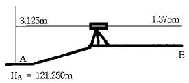
- 122.125 m
- 122.750 m
- 123.000m
- 123.245m
(정답률: 알수없음)
34. 터널의 시점 A와 종점 B사이를 다각측량하여 다음과 같은 좌표를 얻었다. 터널의 시점과 종점사이의 직선거리는?
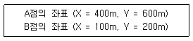
- 300 m
- 400 m
- 500 m
- 600 m
(정답률: 알수없음)
35. 갱내 수준측량에서 다음과 같은 결과를 얻었을 때 C점의 지반고는? (단, A점의 지반고는 15.00m임)
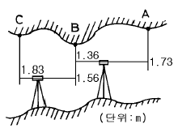
- 13.07m
- 13.27m
- 14.90m
- 15.10m
(정답률: 알수없음)
36. 동일 지점간 거리 관측을 3회, 5회, 7회 실시하여 최확값을 구하고자 할 때 보정치의 분배는?
- 3 : 5 : 7
- 1/3 : 1/5 : 1/7
- 32 : 52 : 72
- 1/32 : 1/52 : 1/72
(정답률: 알수없음)
37. 클로소이드 매개변수(Parameter) A 값이 커지면?
- 곡선이 완만해진다.
- 자동차의 고속 주행이 어려워진다.
- 곡선이 급커브가 된다.
- 접선각도에 비례하여 커진다.
(정답률: 알수없음)
38. 측량용 컴퍼스로 기지점 A부터 B점에 대한 각을 관측하여 S 45° E를 얻었다. A점의 자침편각은 서편 6° 30'이며 평면직각좌표로 표시된 A점의 진북방향각은 12'이다. AB의 방향각은?
- 128° 42'
- 141° 42'
- 128° 18'
- 141° 18'
(정답률: 알수없음)
39. 다음은 측지학에 대한 설명이다. 옳지 않은 것은?
- 측지학은 지구 표면상의 길이, 각 및 높이의 관측에 의한 3차원 좌표결정을 위한 측량만을 한다.
- 측지측량은 지구의 곡률을 고려한 정밀 측량이다.
- 지구 내부의 특성, 형상 및 크기에 관한 것을 물리학적 측지학이라 한다.
- 측지학이란 지구내부의 특성, 지구의 형상, 지표면 상의 상호 관계를 정하는 학문이다.
(정답률: 알수없음)
40. 완화곡선의 곡선반경 설치시 cant와 관계 없는 것은?
- 도로폭
- 곡률반경
- 교각
- 주행속도
(정답률: 알수없음)
3과목: 응용역학
41. 다음 그림과 같은 봉(棒)이 천정에 매달려 B, C, D점에서 하중을 받고 있다. 전구간의 축강도 AE가 일정할 때 이 같은 하중하에서 BC 구간이 늘어나는 길이는?
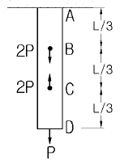
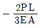
- 0
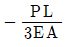
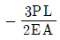
(정답률: 알수없음)
42. 다음의 2경간 연속보에서 지점 A에서의 수직 반력은 얼마인가?
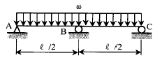
- 5ωℓ/16
- 3ωℓ/8
- 5ωℓ/8
- 3ωℓ/16
(정답률: 알수없음)
43. 평면응력을 받는 요소가 다음과 같이 응력을 받고 있다. 최대 주응력을 구하면?
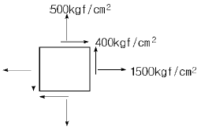
- 640kgf/cm2
- 1640kgf/cm2
- 3600kgf/cm2
- 1360kgf/cm2
(정답률: 알수없음)
44. 탄성변형에너지는 외력을 받는 구조물에서 변형에 의해 구조물에 축적되는 에너지를 말한다. 탄성체이며 선형거동을 하는 길이가 L인 캔틸레버보에 집중하중 P가 작용할 때 굽힘모멘트에 의한 탄성변형에너지는? (단, EI는 일정)
- P2L2/2EＩ
- P2L2/6EＩ
- P2L3/2EＩ
- P2L3/6EＩ
(정답률: 알수없음)
45. 다음 그림에서 지점 C의 반력이 영(零)이 되기 위해 B점에 작용시킬 집중하중의 크기는?
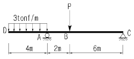
- 8tonf
- 10tonf
- 12tonf
- 14tonf
(정답률: 알수없음)
46. 오일러의 탄성곡선 이론에 의한 기둥 공식에서 좌굴 하중의 비는?
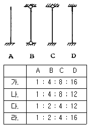
- 가
- 나
- 다
- 라
(정답률: 알수없음)
47. 그림과 같은 길이 6m인 직4각형 단면의 단순보가 자중을 포함하여 400kgf/m의 등분포하중을 받고 있다. 폭이 높이의 1/2이 되도록 할 때 보의 높이는? (단, σn = 80 kgf/cm2 임)
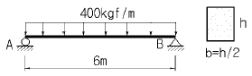
- 30㎝
- 20㎝
- 40㎝
- 45㎝
(정답률: 알수없음)
48. 지름 2cm의 강봉을 10tonf의 힘으로 인장할 때 이 강봉은 얼마나 가늘어 지는가? (단, 프와송 비: 1/3, 탄성계수 E = 2.1× 106kgf/cm2임)
- 0.001mm
- 0.01mm
- 0.1mm
- 1mm
(정답률: 알수없음)
49. 기둥의 밑면에서 응력이 그림과 같을 때 하중의 편심 거리가 가장 큰 단주는?
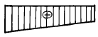
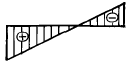
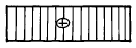
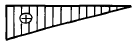
(정답률: 알수없음)
50. 트러스의 응력해석에서 가정 조건으로 옳지 않은 것은?
- 모든 부재는 축 응력만 받는다.
- 모든 부재는 휨 응력도 받는다.
- 모든 하중은 절점에만 작용한다.
- 모든 절점에는 마찰이 작용하지 않는다.
(정답률: 알수없음)
51. 밑변 b, 높이 h인 삼각형 단면의 밑변을 지나는 수평 축에 관한 단면 2차 모멘트 값은?
- bh3/36
- bh3/24
- bh3/12
- bh3/3
(정답률: 알수없음)
52. 그림과 같이 두 개의 활차를 사용하여 물체를 매달 때 3개의 물체가 평형을 이루기 위한 θ값은? (단, 로우프 와 활차의 마찰은 무시한다.)
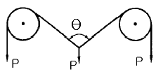
- 30°
- 45°
- 60°
- 120°
(정답률: 알수없음)
53. 다음과 같은 단면적이 A인 임의의 부재단면이 있다. 도심 축으로부터 y1 떨어진 축을 기준으로한 단면2차모멘트의 크기가 Ix1일때, 도심축으로부터 3y1 떨어진 축을 기준으로한 단면2차모멘트의 크기는?
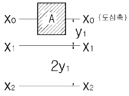
- Ix1+2Ay12
- Ix1+3Ay12
- Ix1+4Ay12
- Ix1+8Ay12
(정답률: 알수없음)
54. 그림과 같은 단순보에서 지점 B에 모멘트 하중이 작용할 때 B의 처짐각은? (단, EI는 일정하다.)
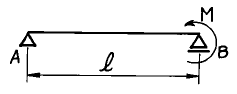
- Mℓ/6EI
- Mℓ/4EI
- Mℓ/3EI
- Mℓ/EI
(정답률: 알수없음)
55. 다음 그림과 같이 연직의 분포하중 w = 2x2 이 작용한다. 지점 B 의 연직방향 반력의 크기는?
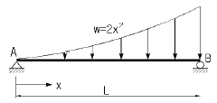
- L2/2
- 2L2/3
- L3/2
- 2L3/3
(정답률: 알수없음)
56. 다음의 보에서 고정단 모멘트 MA는?
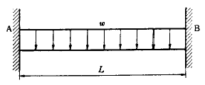
- wL2/8
- wL2/12
- wL2/20
- wL2/24
(정답률: 알수없음)
57. 오일러의 장주공식으로서 적합하지 않은 설명은?
- 세장비가 100 이상일 때 적용된다.
- 기둥의 강도는 단면 2차 모멘트에 비례한다.
- 기둥의 강도는 길이의 제곱에 반비례한다.
- 좌굴응력은 세장비의 제곱에 비례한다.
(정답률: 알수없음)
58. 그림과 같이 지간의 비가 2:1인 서로 직교하는 두 단순보가 중앙점에서 강결되어 있다. 두 보의 휨강성 EI가 일정 할 때 길이가 2ℓ 인 AB보의 중점에 대한 분담하중이 PAB=4000kgf이라면 CD보가 중점에서 받을 수 있는 분담하중 PCD의 크기는?
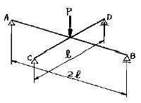
- 4,000 kgf
- 8,000 kgf
- 16,000 kgf
- 32,000 kgf
(정답률: 알수없음)
59. 그림과 같은 라멘은 몇차 부정정인가?
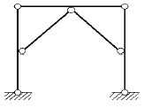
- 1차 부정정
- 2차 부정정
- 3차 부정정
- 4차 부정정
(정답률: 알수없음)
60. 다음 구조물에서 고정지점 A에서 반력모멘트는? (단, C점은 힌지이며, EI는 일정하다.)
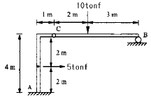
- 14tonf·m
- 16tonf·m
- 18tonf·m
- 20tonf·m
(정답률: 알수없음)
4과목: 건설재료 및 시공
61. 정수압을 이용하여 공벽을 유지하면서 특수비트(bit)의 회전으로 토사를 굴착하고 물의 순환을 이용하여 굴착토와 물을 흡입하여 배출시키는 기초공법은?
- 시카고(Chicago) 공법
- 베노토(Benoto) 공법
- 어스드릴(Earth Drill) 공법
- 리버스 서큘레이션(Reverse Circulation) 공법
(정답률: 알수없음)
62. 확대기초의 측면인 경우 거푸집을 떼어내도 좋은 시기의 콘크리트 압축강도는 최소 얼마 이상인 경우가 좋은가?
- 10 kgf/cm2
- 35 kgf/cm2
- 50 kgf/cm2
- 100 kgf/cm2
(정답률: 알수없음)
63. 준설공사의 기계에 대한 설명 중 옳지 않은 것은?
- 그래브 준설선은 협소한 장소, 소규모준설, 구조물의 터파기에 편리하고 준설깊이를 용이하게 증가할 수 있다.
- 디퍼 준설선은 굴착량이 많고 굳은 토질에 적합하나 준설능력이 떨어져 단가가 크다.
- 버켓 준설선은 암석 및 단단한 토질에 적합하며 준설능력이 적고 수저를 평탄하게 다듬질 할 수가 없다.
- 쇄암준설이라 함은 중추식 혹은 충격식 쇄암선을 사용하여 미리 쇄암한 후에 준설하는 공사를 말한다.
(정답률: 알수없음)
64. 시멘트 제조방법 중 가장 일반적으로 사용되는 방법은?
- 습식법(wet process)
- 건식법(dry process)
- 반습식법(semi wet process)
- 소성요법(kiln process)
(정답률: 알수없음)
65. 다음 시멘트 중 콘크리트 댐 시공에 적합한 것은?
- 보통 포틀랜드 시멘트
- 중용열 포틀랜드 시멘트
- 조강 포틀랜드 시멘트
- 백색 포틀랜드 시멘트
(정답률: 알수없음)
66. 다음 중 첨장제(添裝劑)인 데토릴의 용도로 옳은 것은?
- 뇌관의 원료
- T.N.T의 주원료
- 도폭선의 원료
- 초안폭약의 원료
(정답률: 알수없음)
67. 다음 교각에 작용하는 외력(外力)중 연직하중에 관한 것이 아닌 것은?
- 풍압
- 교각의 자중
- 상부구조의 중량
- 교량을 통과하는 활하중
(정답률: 알수없음)
68. 안정된 자연 비탈면과 본바닥이 이루는 각(φ)을 무엇이 라 하는가?
- 시공경사각
- 경사비탈각
- 비탈면각
- 흙의 안식각
(정답률: 알수없음)
69. 그라우팅(Grouing)용 혼화제로서의 필요한 성질 중 옳지 않은 것은?
- 단위수량이 작고, 블리딩이 작아야 한다.
- 그라우트를 수축시키는 성질이 있어야 한다.
- 재료의 분리가 생기지 않아야 한다.
- 주입하기 쉬어야 하며, 공기를 연행 시켜야 한다.
(정답률: 알수없음)
70. 강(鋼)을 높은 온도로 가열한 후에 이를 공기중에서 냉각시켜 강의 가공으로 인한 내부응력을 제거하고 강을 연화시키기 위한 열처리작업을 무엇이라 하는가?
- 뜨임(annealing: 소려)
- 불림(normalizing: 소준)
- 풀림(annealing: 소둔)
- 담금질(quenching: 소입)
(정답률: 알수없음)
71. 특수 페인트로서 모르타르나 콘크리트와 같은 알카리성 재료에 도료가 잘 붙도록 한 페인트는?
- 녹막이 페인트
- 내알칼리 페인트
- 내산 페인트
- 수성 페인트
(정답률: 알수없음)
72.
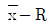
관리도를 작성하는데 있어서 다음 5개 Data에 대한 및 R 을 계산하면?
및 R 을 계산하면?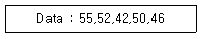
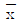
=49, R=13 =49, R=7
=49, R=7 =50, R=6
=50, R=6 =50, R=10
=50, R=10
(정답률: 알수없음)
73. 다음 중에서 폭발력이 가장 강하고 수중에서도 폭발할 수 있는 다이너마이트(dynamite)는 어느 것인가?
- 규조토 다이너마이트
- 교질 다이너마이트
- 스트레이트 다이너마이트
- 분상 다이너마이트
(정답률: 알수없음)
74. 철근 콘크리트 구조에 사용되는 4종 이형철근을 기호 SD40으로 표시하는데 이때 40은 무엇을 나타내는가?
- 철근의 지름
- 철근의 항복점강도
- 철근의 인장강도
- 철근의 길이
(정답률: 알수없음)
75. 다져진토량 37,800m3를 성토하는데 흐트러진토량30,000m3가 있다. 이 때 부족토량은 자연상태로 얼마인가? (단, 사질토이고 토량의 변화율은 L=1.25, C=0.9이다.)
- 18000m3
- 16000m3
- 14000m3
- 12000m3
(정답률: 알수없음)
76. 단위용적 중량이 1.64t/m3인 굵은골재의 비중이 2.62일 때 이 골재의 공극률은?
- 37.4%
- 49.8%
- 57.4%
- 59.8%
(정답률: 알수없음)
77. 암석 특유의 천연적으로 갈라지는 금을 무엇이라 하는가?
- 돌눈
- 석리
- 석층
- 절리
(정답률: 알수없음)
78. 깊이 40m의 토층에서 표준관입시험을 한 결과 N=35였다. 로드길이와 토질에 의한 수정 N 값은?
- 16
- 18
- 22
- 35
(정답률: 알수없음)
79. 다음 계획공정표의 공기는 며칠인가? (단, 각 활동선상의 숫자는 그 활동의 소요일자임.)
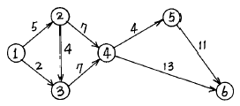
- 28일
- 29일
- 30일
- 31일
(정답률: 알수없음)
80. 수직도갱의 심빼기공으로 특히 물이 많을 때 편리한 공법은?
- 피라밋컷
- 노컷
- 스윙컷
- 번컷
(정답률: 알수없음)
5과목: 철도보선관계법규
81. 다음 용어 설명 중 옳지 않은 것은?
- 궤간이라 함은 레일면에서 하방 12mm 지점의 상대편 레일 두부내측간 최단거리를 말한다.
- 본선이라 함은 열차운전에 상용하는 선로를 말한다.
- 역이라 함은 여객 또는 화물을 취급하기 위하여 시설한 장소를 말한다.
- 신호장이라 함은 열차의 교행 또는 대피를 하기위하여 시설한 장소를 말한다.
(정답률: 알수없음)
82. 철도청 철도사고 보고 및 수습처리규정에서 운전사고가 아닌 것은?
- 열차충돌
- 열차탈선
- 열차지연
- 열차화재
(정답률: 알수없음)
83. 장비검수 중 100시간 가동 또는 1개월 운용후 시행하는 검수는?
- 2주 검수
- 월상검수
- 3개월 검수
- 6개월 검수
(정답률: 알수없음)
84. 신호염관의 장치에 관한 설명 중 옳지 않은 것은?
- 방호할 지점에서 20 m 이상을 격리하고 접근열차에서 향하여 레일의 우측 혹은 중앙
- 넘어지지 않도록 하여야 한다.
- 목적이외의 열차에 오인될 지점을 피할 것
- 열차에서 인식 곤란한 경우 혹은 급히 장치를 하는 경우에는 적당한 위치
(정답률: 알수없음)
85. 레일의 쌓기에서 보통 중고품레일의 단면도색은 무슨색인가?
- 백색
- 적색
- 청색
- 흑색
(정답률: 알수없음)
86. 레일교환작업시 작업종류에 해당되지 않는 것은?
- 도상면 고르기
- 레일밀림 방지장치 철거
- 이음매부 침목위치 바로잡기
- 도상자갈 다지기
(정답률: 알수없음)
87. 기존철도를 횡단하여 도로를 신설하거나 도로의 노선을 개량하는 경우에 비용부담자는?
- 당해도로관리청
- 철도경영자, 당해도로관리청이 1/2씩 부담
- 철도경영자
- 철도경영자와 도로관리청이 협의하여 부담
(정답률: 알수없음)
88. 국유철도 건설규칙에서 기관차의 축중은 정차중에 있을때 몇 톤 크기 이하이어야 하는가?
- 15톤
- 20톤
- 22톤
- 25톤
(정답률: 알수없음)
89. 무도상교량상에서의 캔트는 대부분 캔트량의 1/2은 거더의 보자리에 나머지 1/2은 팩킹을 사용한다. 다음 중 이러한 방법으로 캔트를 붙이지 않는 거더는? (단, 국철의 경우임.)
- 트러스 거더
- 드와프 거더
- 프레이트 거더
- I형 거더
(정답률: 알수없음)
90. 장대레일 부설구간의 도상저항력은?
- 500kgf/m 이상
- 600kgf/m 이상
- 700kgf/m 이상
- 1000kgf/m 이상
(정답률: 알수없음)
91. 차량의 표기에 필요하지 않는 것은?
- 기관차, 객차 및 화차에는 국유철도의 심볼마크와 차량번호
- 객차에는 좌석표기
- 열차 편성수
- 차량의 자체중량 및 길이
(정답률: 알수없음)
92. 도상자갈 살포시 운전속도는 다음의 얼마를 초과해서는 안되는가? (단, 국철의 경우임.)
- 10km/h
- 15km/h
- 20km/h
- 25km/h
(정답률: 알수없음)
93. 차량은 20mm의 슬랙을 가진 반경 몇 m의 곡선구간의 선로를 통과할 수 있는 구조로 하여야 하는가?
- 150m
- 120m
- 90m
- 80m
(정답률: 알수없음)
94. 궤도재료점검에서 레일점검의 종류에 해당되지 않는 것은?
- 외관점검
- 해체점검
- 초음파 탐상 점검
- 궤도검측차 점검
(정답률: 알수없음)
95. 곡선부 궤도보수 점검에서 곡선 외측레일을 기준으로 측정하여야 하는 것은?
- 궤간
- 수평
- 면마춤
- 줄마춤
(정답률: 알수없음)
96. 2급선의 교량 부담력은 다음중 어떤 표준활하중을 감당할 수 있어야 하는가?
- LS - 25
- LS - 22
- LS - 18
- LS - 15
(정답률: 알수없음)
97. 침목교환 작업시 스파이크 뽑는 순서로 옳은 것은?
- 한쪽레일의 외측-상대편레일 내측-상대편레일 외측 - 최초 시작쪽 레일의 내측
- 한쪽레일의 외측-상대편레일 외측-상대편레일 내측 - 최초 시작쪽 레일의 내측
- 한쪽레일의 내측-상대편레일 외측-상대편레일 내측 - 최초 시작쪽 레일의 외측
- 한쪽레일의 외측-상대편레일 내측-최초 시작쪽 레일 의 내측 - 상대편레일 외측
(정답률: 알수없음)
98. 보선장비관리규정에서 중보선장비에 속하지 않는 것은?
- 밸러스트 콤팩터
- 궤도검측차
- 밸러스트 도져
- 모터카
(정답률: 알수없음)
99. 사고 복구용 비상화차의 적재품목이 아닌 것은?
- 보통침목
- 레일
- 스파이크
- p.c 침목
(정답률: 알수없음)
100. 보선사무소(시설관리사무소) 소재지의 소장이 지정하는 자는 1시간당 강우량이 얼마를 초과하였을 때 매시간마다 관측치를 기록 유지하여야 하는가?
- 5mm
- 10mm
- 20mm
- 30mm
(정답률: 알수없음)